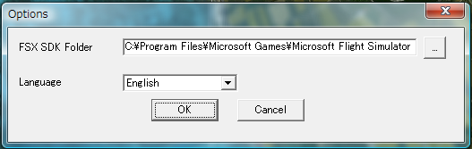

Option menu

- "Terrain SDK folder" : Specify FS2000 Terrain SDK program folder contains resample.exe, tmf2bgl.exe etc.
Not Custom Terrain SDK! Use FS2000 Terrain SDK!!
- "Imagetool folder" : Specify Custom Terrain Textures SDK program folder contains Imagetool.exe.
- "Language" : Specify your favorite language.